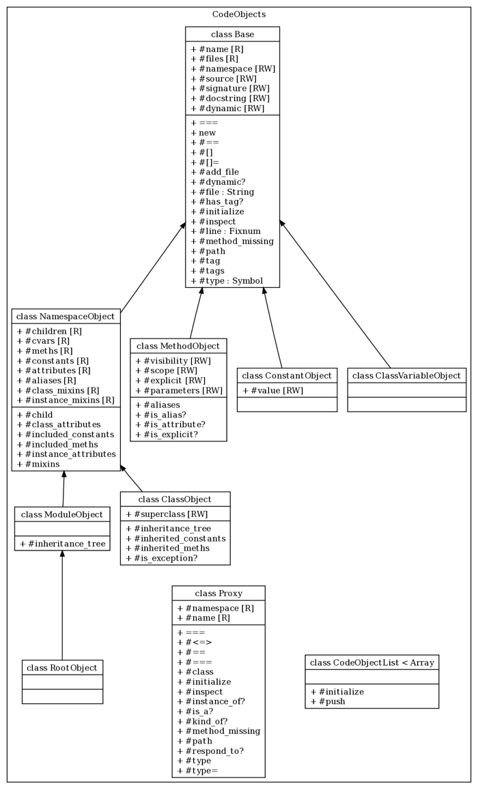

CodeObjects Architecture
Code objects are Ruby objects that describe the code being documented. For instance,
all classes, modules, methods, etc. are all extracted from the Ruby source as code
objects. All of these code objects extend from the ::YARD::CodeObjects::Base class, which
provides basic attributes like source location, source code, name and path.
CodeObjects Organization
Code objects are divided into two basic types. NamespaceObjects
and non-namespace objects. A namespace object refers to any object in Ruby that can have
other objects defined inside of it. In the context of Ruby, this specifically means
modules and classes (both of which are subclasses of NamespaceObject). These objects
act like tree structures, maintaining a list of all of their direct children. All non
namespace objects are simply subclasses of the Base class. The RootObject
is a special kind of NamespaceObject which refers to the top level namespace in Ruby.
Methods that accept a namespace object as a parameter should also accept the symbol
:root as a shortcut for the root object.
The following is an overview of the classes within the CodeObjects namespace:

Unique Path Representation
All CodeObjects are uniquely defined by their implementation of YARD::CodeObjects::Base#path.
This path is used to locate or store a code object in the ::YARD::Registry. It is therefore
essential that any Base subclass return a unique String value for #path so that the
object may co-exist with other objects in the Registry.
In practice, a path is simply the conventional Ruby representation of a class, module, constant, class variable or method. For example, the following objects would have the following respective paths:
- Class
Klassinside moduleMod:Mod::Klass - Instance method
barinside classFoo:Foo#bar - Class method
barinside classFoo:Foo.bar - Constant
VERSIONinside classYARD: YARD::VERSION - Class variable
@@abcinside classA:A::@@abc
Registry
CodeObjects classes are coupled with the ::YARD::Registry class which keeps track of
all instantiated code objects. This is an explicit design choice to allow objects
to be fetched, cached, imported and exported from a centralized location. As mentioned
above, this coupling is a result of the fact that each object is uniquely identified by
its path, which is used to implement lookups. You can read more about the registry
in the ::YARD::Registry class.
Identity Map
Code objects are instantiated using an identity-map like implementation that guarantees
only one unique Ruby object exists for an object described by a specific path. This
allows developers to create a code object without checking if it already exists in
the ::YARD::Registry. The following example will only create one object:
id = ClassObject.new(:root, "MyClass").object_id #=> 13352
ClassObject.new(:root, "MyClass").object_id #=> 13352Proxy Objects
In addition to providing access to existing objects, a ::YARD::CodeObjects::Proxy
class exists which can represent an object at a path that may or may not have been
created. This is necessary to represent a reference to an object in code that is
never defined in the same body of source code, or perhaps defined later. If any
attributes of a proxy are accessed, it will immediately be resolved to the object
at its declared path. In the case where such an object exists, it will act as
a delegate to the object. However, if the object does not exist, a warning will
be raised. Whenever arbitrary code objects are used, care should be taken in
order to make sure attributes are not accessed on unresolvable proxies. An
unresolvable proxy will return a class name of Proxy and #type of :proxy,
for example:
P(:InvalidObject).type == :proxy #=> true
P(:InvalidObject).is_a?(Proxy) #=> trueAdding Data to Code Objects
Code objects act as hash-like structures that allow any arbitrary value to be set. This allows easy extending of existing objects without creating custom subclasses. For instance, to add a timestamp to a method object (when it was modified, maybe), it is possible to simply do:
object = MethodObject.new(:root, "my_method")
object[:modified_at] = Time.nowThis value can now be retrieved on this object both by the hash [] syntax as
well as like any other method:
object.modified_at #=> 2009-06-03 20:08:46 -0400Creating a Custom CodeObject
It should first be mentioned that creating a custom code object should not be necessary in most cases, except when functionality that cannot be represented by classical Ruby objects is added. A good example might be a test class, which although is technically a Ruby class, has a significantly different purpose in documentation and needs a different set of metadata, as well as its own representation in documentation.
The YARD::CodeObjects::Base#path implementation is the most important part of the
code object architecture. The first thing any custom code object must guarantee is
that its path value is unique among all other objects. The recommended way to do this
with custom objects is to add a descriptive prefix to the path. For example, the
following is an implementation of the path for a hypothetical FooObject:
def path
"__FooPrefix" + sep + super
endNote that if our FooObject is a NamespaceObject, meaning if it can have child
FooObjects defined inside of it, you may need to verify that the prefix is only
applied once.